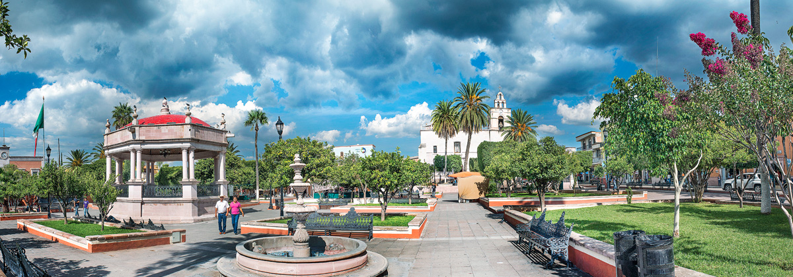

Calvillo es una ciudad y cabecera del municipio de Calvillo, en el suroeste del estado de Aguascalientes, México. Fue parte de la Provincia de Nueva Galicia, actual Nayarit y Jalisco, en el Reino de Nueva Galicia entre su fundación y 1786, y de la Intendencia de Guadalajara de 1786 a 1821. Según el censo de población del INEGI realizado en el 2010, cuenta con una población de más de 56,000 habitantes. Tiene una altura promedio de 1,640 msnm. Se localiza a una distancia de 52 km de la ciudad capital del estado, la ciudad de Aguascalientes. El poblado fue incluido en 2012 en el programa Pueblos Mágicos de la Secretaría de Turismo.
